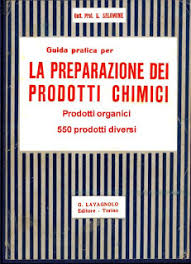
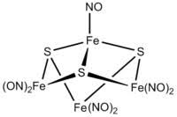
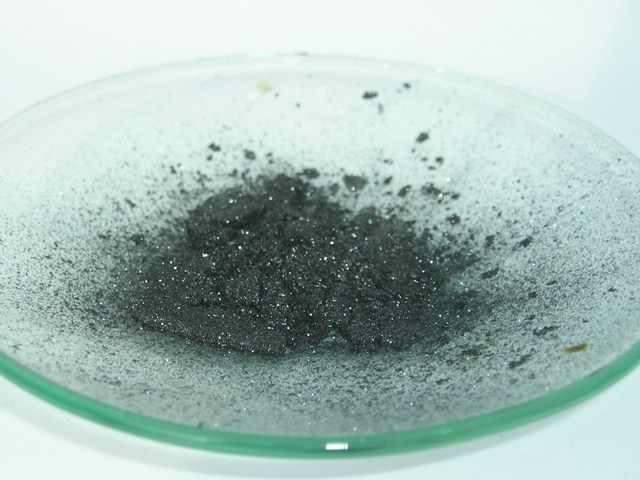

Scorrendo il buon vecchio Salomone (una cara bibbietta degli sperimentatori degli anni '50, non sempre affidabilissima ma a cui si perdonano volentieri tutti i peccati), mi sono imbattuto nel Sale di Roussin, un bel complesso nero con un nome altrettanto suggestivo:solfuro epta-nitroso-ferro-potassico, ovvero KFe4(NO)7S3.H2O, e, come al solito, m'è venuta voglia di provare a farlo.

Guarda che meraviglia di struttura, tutto un intreccio di legami covalenti tra zolfo, ferro, azoto, ossigeno... solo a guardare questo groviglio vien voglia di mettersi a giocare con beute e reagenti!
Materiale occorrente:
Ferro solfato (II)
Potassio nitrito
Sodio solfuro
Vetreria opportuna
Preparare una soluzione di 10,5 g di potassio nitrito e 7,5 g di sodio solfuro in 100 ml di acqua.
La soluzione scurisce; a questa aggiungere a poco a poco una soluzione di 17,5 g di solfato ferroso in 100 ml di acqua.
Si ottiene un precipitato nero e denso, che si scioglie parzialmente riscaldando alla ebollizione. Salomone non lo dice, ma si forma sicuramente anche solfuro ferroso, quindi il liquido si filtra ancora molto caldo e si tiene il filtrato.
Io ho ripetuto l'operazione per essere sicuro di non averre FeS. Per raffreddamento si separa una polvere nera cristallina immersa in un liquido altrettanto nero.
Il complesso è abbastanza solubile in acqua e ha una estrema potenza colorante: ne basta una minima puntina di spatola per colorare una intera provetta d'acqua di nero impenetrabile, mentre estremamente diluito è rossastro.

Esiste anche un altro "sale rosso di Roussin", di formula K2[Fe2S2(NO)4], entrambi studiati nel 1858 dal chimico francese M.L.Roussin; più recentemente sono stati preparati degli esteri organici derivati da questi complessi nitrosil-solforati.
Spesso le preparazioni del prof. Salomone devono essere abbastanza "interpretate": prese alla lettera portano talvolta a risultati un po' troppo grossolani, ma il libro rimane un must nella storia della vecchia chimica sperimentale ed una vera miniera di idee per interessanti esperimenti organici ed inorganici.
4 commenti